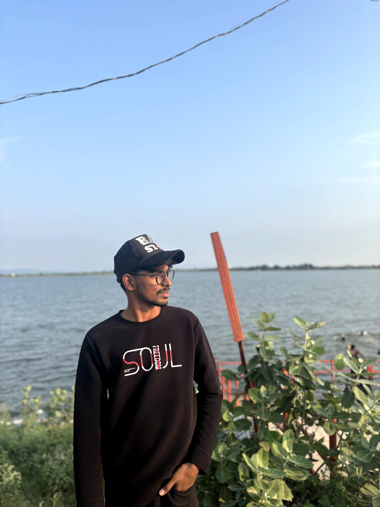
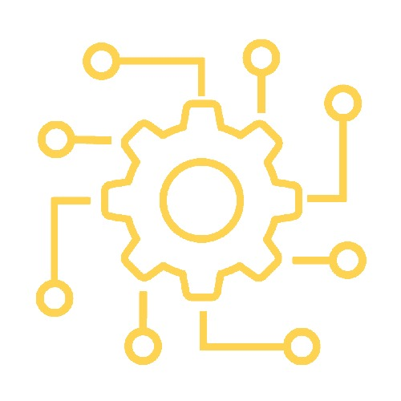

ABOUT
Hi I'M Yunus, and I want to become a full-stack developer. This means I want to learn how to build both the front-end and back-end of websites and applications. The front-end is what users see and interact with, such as buttons, text, and images on a webpage, while the back-end is responsible for storing data, managing user requests, and making everything function properly behind the scenes. To achieve this goal, I need to learn various programming languages and technologies. For the front-end, I will focus on HTML, CSS, and JavaScript, along with popular frameworks like React or Angular. On the back-end, I need to learn about databases, servers, and programming languages such as Node.js, Python, or PHP. I also want to understand how to connect the front-end and back-end so they work together smoothly. Becoming a full-stack developer requires practice, patience, and problem-solving skills, but I am excited about the journey. My goal is to build complete and functional web applications that can help businesses and users in their daily lives. With continuous learning and experience, I hope to become a skilled developer capable of handling real-world projects from start to finish.
EDUCATIONAL DETAILS
| Class | Passing Year | Percentage |
|---|---|---|
| 10th | 2022 | 83.3% |
| 12th | 2024 | 64.5% |
| Present doing Degree B.com | ||
Chasing my aim of becoming a full-stack developer with Iman Tech Solutions means learning how to build websites and applications from start to finish. I want to master both the visible parts users see (front-end) and the hidden systems that make everything work (back-end). At Iman Tech Solutions, I hope to learn from experts, work on real projects, and improve my skills. This journey will help me grow as a developer and create useful, innovative technology that makes a difference.
Learn more about Iman Tech Solutions and their amazing work !
SKILLS
- HTML Bascis
- Learning CSS
- Learning JavaScript
- C Basics
CONTACT
E-mail:iamyunus09@gamil.com
Phone:9390960237
For more information visit my insta & facebook link as given
Insta linkFacebook link